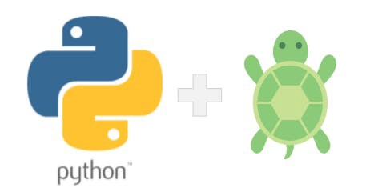

Hello World? Turtle!

Created by Fernando Marques

História e Gestão
- A implementação começou em 1989 por Guido Van Rossum na Holanda
- Python 2.0 foi lançado em 2000
- Python 3.0 lançado em 2008 e o suporte ao famoso python 2.7 acabou em 2020.
- O devenvolvimento acontece por meio de PEPs submetidas pela comunidade e Guido tinha poder de veto
- Guido era um Benevolent Dictador for Life mas anunciou sua saída em 2018
- PEP 13 rege a governança do Python
- Atualmente o conselho é composto por cinco pessoas

O que é Turtle?
O que é Turtle?
- É uma biblioteca
- Permite a criação de desenhos e animações
- Permite alterar cores e espessura da caneta
- Permite criar fractais e animações
- É uma biblioteca padrão do python
O que são funções?
O que são funções?
- Blocos de código que realizam tarefa específica
- Ajudam a melhorar a legibilidade e tornar o código mais organizado (refatoração)
- Funções podem receber parâmetros
- Podem, também, ter um valor de retorno
- São nativas, importadas ou criadas pelo programador
- Método vs. Função ???
Expectativas
Expectativas
- Ser capaz de criar desenhos simples utilizando a biblioteca Turtle
- Ser capaz de entender os conceitos básicos de biblioteca e chamada de função
- Utilizar comandos simples como forward, backward, right, left, penup and pendown.
- Aplicar os conhecimentos aprendidos para criar desenhos criativos e esteticamente agradáveis
- Compartilhar os desenhos e explicar como foram feitos
Utilizando o replit
- Talvez seja necessário criar conta
- Podem entra em uma conta só por dupla!
Primeira Tarefa
Primeira Tarefa (15 minutos)
- Desenhe um quadrado
- Já terminou? Tente pintar dentro e fora do quadrado.
- Terminou também? Agora faça um quadrado dentro do outro!
Segunda Tarefa
Segunda Tarefa (50 minutos)
- Crie um triangulo
- Crie um retângulo
- Crie um hexágono
- Utilize a criatividade para fazer formas diferentes! Use cores!!!
- Link para um cheatsheet de turtle